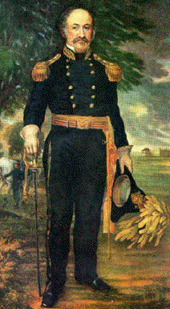

James Marshall discovered gold on John Sutter's land in California in 1848, starting the great Gold Rush that fueled much of America's westward expansion. Unfortunately, goldseekers invaded his land, destroyed his crops, and stole his animals and tools. The discovery that should have made him rich made him bankrupt instead.
Please try again.
the Midas touch
John Sutter?
